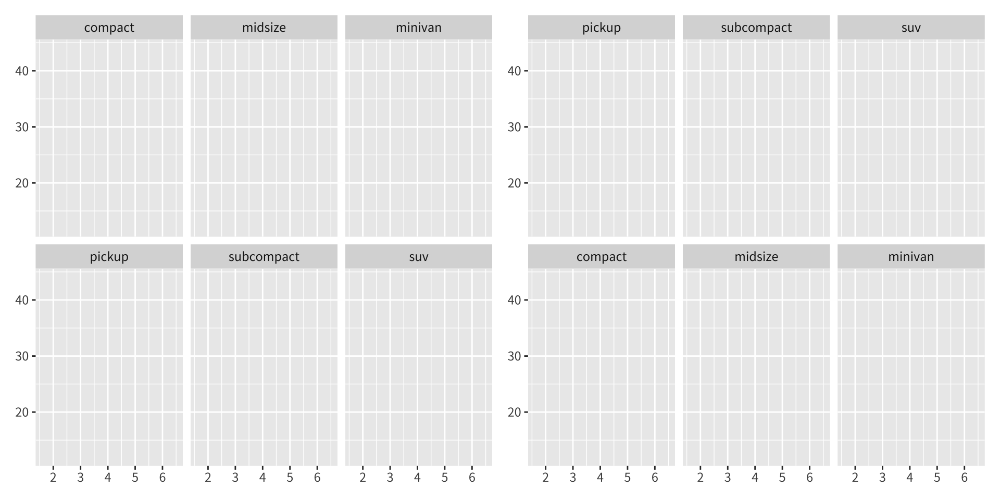
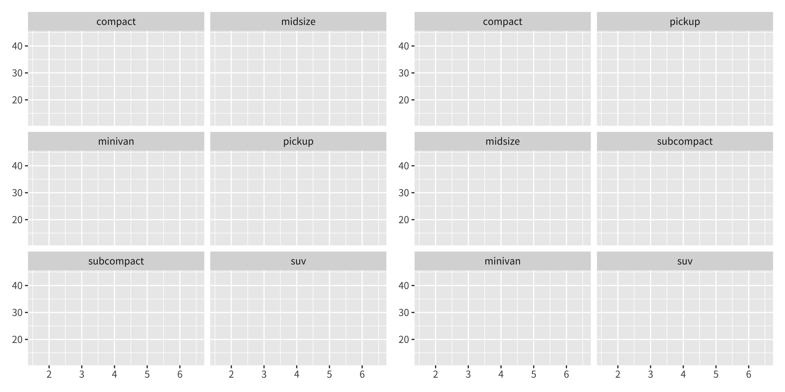
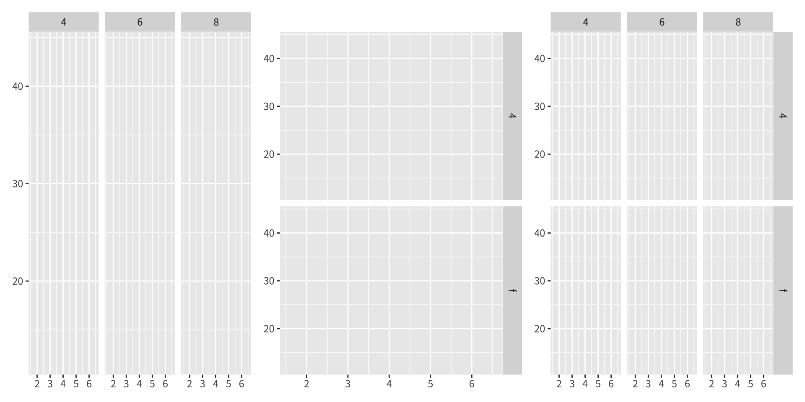
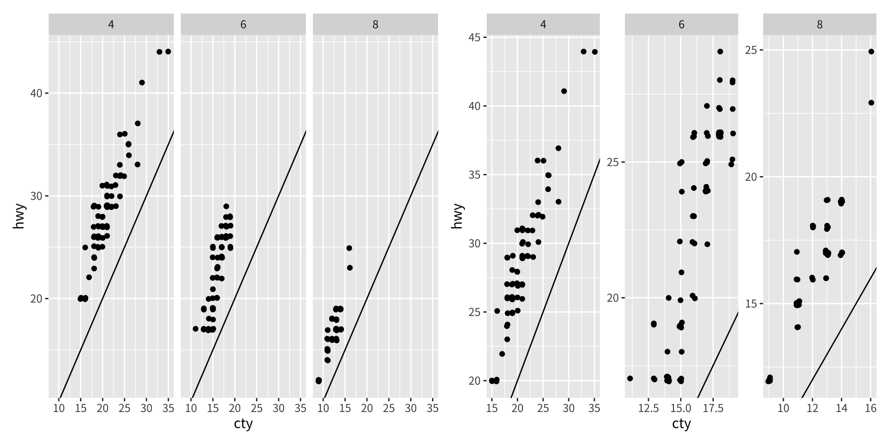
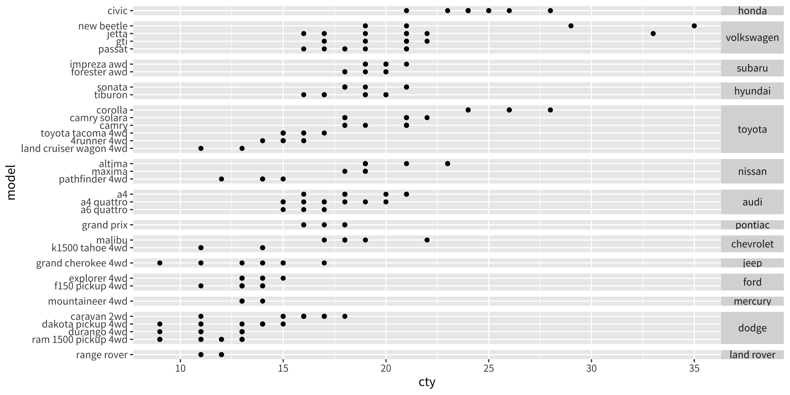
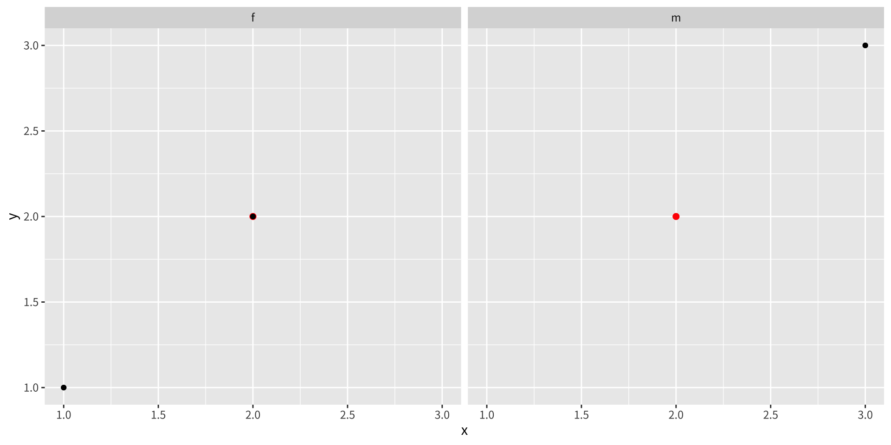
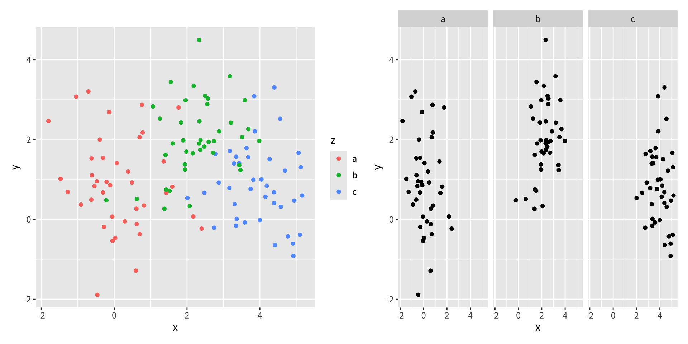
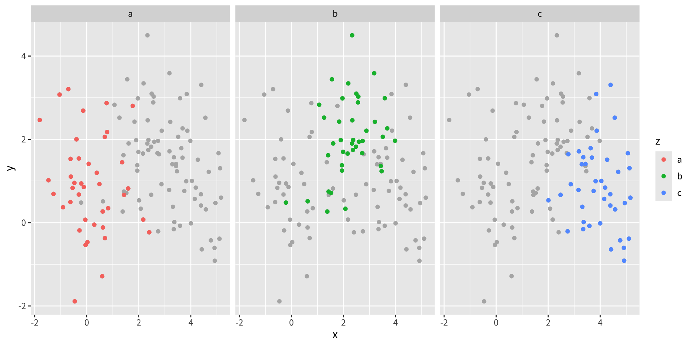
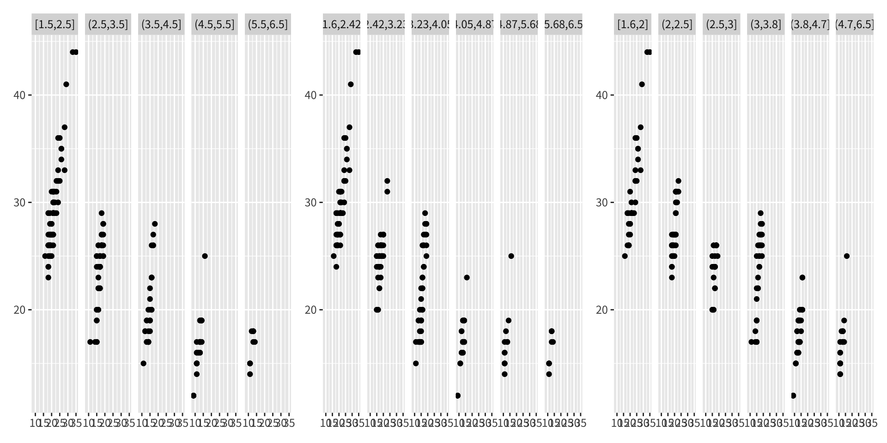

資料分析
第十六章：分面
實踐大學
2026-06-06
分面
概覽
分面（faceting）會產生小型多重圖（small multiples）：一個面板網格，每個面板顯示資料的不同子集。小型多重圖是探索性分析的強大工具——你能迅速比較各子集的型態，判斷它們是否相同。
分面有三種類型：
facet_null()——單一圖（預設）facet_wrap()——把 1D 面板帶狀條捲繞成 2Dfacet_grid()——由列與欄變數定義的 2D 面板網格
全章我們使用一個水準數可控的 mpg 子集：
Facet Wrap
Facet Wrap
facet_wrap() 把一長條面板帶捲繞成 2D——對單一變數有許多水準時最理想。你以下列方式控制版面：
ncol/nrow——欄數或列數（只需設一個）as.table——TRUE像表格排列（最大值在右下）；FALSE像圖排列（最大值在右上）dir——捲繞方向：horizontal（水平）或 vertical（垂直）

同樣的分面，改以列捲繞、並採垂直方向：

Facet Grid
Facet Grid
facet_grid() 以公式定義的 2D 網格排列面板：
. ~ a——把a攤在欄（對齊垂直尺度 → 比較 y 位置）b ~ .——把b攤在列（對齊水平尺度 → 比較 x 位置／分布）b ~ a——a在欄、b在列

把水準數最多的變數放在欄，以善用寬螢幕。
你可以用加法在同一側放多個變數：a + b ~ c + d。同側相加的變數是巢狀的——只有資料中出現的組合才會顯示。分置於列與欄的變數是交叉的——所有組合都會顯示，可能產生空面板。
控制尺度
自由 vs. 固定尺度
預設下每個面板共用相同的位置尺度。scales 引數放寬此限制：
| 值 | 效果 |
|---|---|
"fixed" |
x 與 y 在所有面板皆固定（預設） |
"free_x" |
x 自由、y 固定 |
"free_y" |
y 自由、x 固定 |
"free" |
x 與 y 皆變動 |
固定尺度讓跨面板的比較較容易；自由尺度讓面板內的型態較容易看見。facet_grid() 多了一個限制：一欄共用一個 x 尺度、一列共用一個 y 尺度。

自由尺度也適合疊放量測尺度不同的時間序列——轉成長格式後，用 facet_wrap(~variable, scales = "free_y", ncol = 1)。
space 引數
facet_grid() 還有一個 space 引數（取值與 scales 相同）。當 space = "free" 時，每列或每欄的尺寸與其尺度的範圍成比例，因此 1 公分在各處都映射到相同的資料範圍。這對水準數不同的類別尺度最有用：

缺失變數與分組
缺失的分面變數
若某圖層的資料集缺少分面變數會如何？這常見於加入應出現在每個面板的脈絡資訊時。ggplot2 會做合理之事：缺失的分面變數被當作擁有所有值，因此該圖層會被畫在每一個面板。

來自 df2 的單一紅點出現在兩個面板中。
分組 vs. 分面
分面是用美學（顏色、形狀、大小）區分群組的替代方案。取捨在於位置：
- 分組——群組彼此靠近、可能重疊；小差異容易看見。
- 分面——每個群組各佔一面板、無重疊；當群組重疊嚴重時很好，但小差異較難察覺。

分面比較往往受益於標註。一個有用的技巧是把所有資料以灰色放在每個面板的背景，使每個子集都對照整體來看：

連續變數
對連續變數分面
要對連續變數分面，你必須先把它離散化。ggplot2 提供三個輔助函式：
| 輔助函式 | 行為 |
|---|---|
cut_interval(x, n) |
n 個等長的箱 |
cut_width(x, width) |
等寬的箱 |
cut_number(x, n) |
n 個等數量的箱 |
mpg2$disp_w <- cut_width(mpg2$displ, 1)
mpg2$disp_i <- cut_interval(mpg2$displ, 6)
mpg2$disp_n <- cut_number(mpg2$displ, 6)
plot <- ggplot(mpg2, aes(cty, hwy)) + geom_point() + labs(x = NULL, y = NULL)
a <- plot + facet_wrap(~disp_w, nrow = 1)
b <- plot + facet_wrap(~disp_i, nrow = 1)
c <- plot + facet_wrap(~disp_n, nrow = 1)注意：分面公式不會對函式求值，所以必須先建立離散化後的變數。

練習
顯示鑽石
price在cut與carat條件下的分布。試試以cut分面、以carat分組，再反過來。你偏好哪個？為什麼？比較各鑽石
color的price與carat關係。是什麼讓群組難以比較？在此分組好還是分面好？為什麼
facet_wrap()通常比facet_grid()更有用？
重現一張依
class分面mpg2、同時疊上一條對整個資料集配適的單一平滑曲線的圖。（提示：給平滑圖層一個不含分面變數的資料集。）用
facet_grid()搭配space = "free"，繪製cty對重排後的model、依manufacturer分組。為什麼比例式間距在此有幫助？用
cut_width()、cut_interval()、cut_number()三種方式離散化displ，再依各方式分面。面板內容有何不同？在分面圖上示範「所有資料以灰色作背景」的標註技巧。為什麼它有助於跨面板比較？
版權聲明
版權聲明。 本教材改編自 ggplot2: Elegant Graphics for Data Analysis (3e)。所有權利均由原作者與出版者保留。
僅供非商業用途。 本教材嚴格限定用於教育目的，不得用於商業獲利。
適當標註出處。 任何對本教材的重製、散布或使用，都必須適當標註原始出處。

ggplot2: Elegant Graphics for Data Analysis